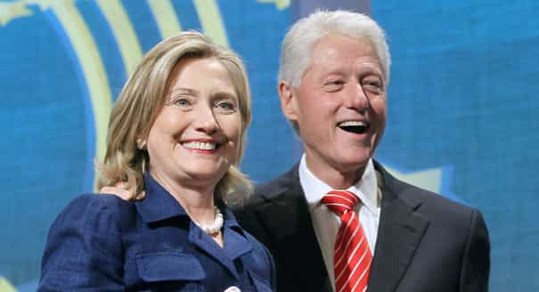
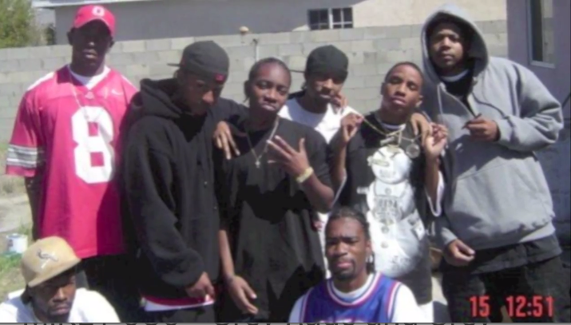

< < < Back
Either Everyone Can Use The N-Word Or No One Can – Return Of Kings
Forgetting black airport workers and travelers, what’s the first thing an Australian like me often hears an African-American saying on the street after arriving in the US? Nigga, nigga, and nigga. Again and again, this word accosts my ears. From New York City to LA, Chicago to Seattle, it does not matter, unless you’re a white guy saying it. Because of this very strange, asymmetrical phenomenon, I put the following to you: either everyone should be able to use the word “nigga” and its ancestor “nigger,” or no one should.
If a white person, even a non-American, says either “nigger” or, more commonly, “nigga” in the presence of a so-called “brother,” their subsequent dental bill will be conservatively estimated at above $10,000. Yet for blacks it is the perennial term of endearment or rebuke, used in situations as disparate as casual greetings to bickering over a particular loose woman two parties want. How can a word be racist when a white says it, but acceptable when a black does?
The problem is really one of self-serving leftists selectively condoning different users of what is essentially one word, not two, depending on the skin color of the user. Why are liberals and SJWs especially so insistent on eliminating the word “nigger” from all parlance, all while turning a completely blind eye to African-Americans uttering “nigga”? After all, American elocution across every race and location is not only diverse in its types but greatly slackening overall. Lax, casual pronunciation invariably results in “nigger” sounding either identical or very close to “nigga.” Furthermore, a quasi-suffix change, lazy word endings or not, should not mean the difference between perpetuating racism and promoting a “beneficial,” expressive form of ebonics between African-Americans.
What SJWs really want is two separate but related forms of linguistic victimhood for African-Americans. On the one hand, whites using the term “nigger” or non-racistly appropriating “nigga” is the modern reinvention of slavery and Jim Crow era styles of oppression. Or so leftists say. Then we have blacks referring to one another as a “nigga.” The substitution of “-a” for “-er” is meant to make the word not just palatable but acceptable. Having been derived from “nigger,” though, the word is a subtle instrument for making African-Americans feel like victims amongst their own communities, with just the slightest phonetic difference between the two varieties. This reinforced victimhood is vital for left-of-center elites.
Democrats and SJWs need an almost universally pro-leftist and “victimized” black community, hence why “nigga” is tolerated and even promoted

Bill could count on the black vote and Hillary will. But what have they actually produced, aside from racial conspiracy theories that serve to keep African-Americans feeling victimized?
People often remark that evangelicals are the backbone of the Republican Party. What few remember, nonetheless, is that *only* 79% of them voted for Mitt Romney in the 2012. Comparable figures can be retrieved for both Bush elections and John McCain’s failed Presidential bid. Still, when this is compared to the proportion of blacks voting for Democratic Presidential (or Congressional) candidates, it fizzles into mediocrity. Some 93% of blacks voted for Obama in 2012. It did not matter that Obama himself was black; Clinton, Gore and Kerry all routed Republicans in attaining black votes. Unless you discount the liberal vs. conservative and Democratic vs. Republican categories, which are essentially meaningless in explaining voting preferences, no major demographic group votes anywhere close to as reliably for one party as blacks do for the Democrats.
This loyal base of support, which proves the difference in election after election won by Democrats, depends on reminding blacks of the past and, unfairly, associating that past directly with modern Republicans and just generally non-Democrats and non-SJWs. The GOP may have presided over the elimination of slavery in the 1860s, but the once vehemently pro-slavery Democrats are falsely equated with fighting contemporary racism.
This is where “nigga” comes in. Whenever it is used by African-Americans, it is seen as “reclaiming” the word. But to use “nigga” implies that the word “nigger” is in overuse today, which is patently not the case. The reality does not matter. What does is the bonafide scaremongering, namely that racism apparently lurks behind every corner featuring a white.
If this false climate of persecution were lacking or faded into non-existence, Democrats would have nothing to lure in black voters. They have delivered nothing of value for African-American communities. Incarceration rates for African-American young men actually increased due to Clinton era policies of sentencing, even as Democrats claimed that racism, not personal choice, explained the superlative rates of blacks being jailed for violent crimes.
To hide these failures, which extend to areas as wide as social welfare dependency and representation within the corporate and professional worlds, leftists need to use cheap devices like fixations on when whites rarely use the N-word or cops shooting black men either armed or reaching for their gun.
Beat up on everyone who says the N-word or let them all say it without consequence

People who use the word “nigga” in empowering ways. Not pictured: the white guy they kicked the shit out for saying “nigga” without even using “nigger.”
I do not support violence but using the N-word in either of its forms would be semi-understandable… if everyone faced the same penalties for mouthing it out. Until such time as there is equivalency in social and even physical rebukes, no black person should be able to reserve an exclusive right of use compared to whites and others.
Reaction to the word “nigger,” when blacks use basically the same term but with an “-a” themselves, also underscores the lack of legitimate gripes race baiters like Al Sharpton and Jesse Jackson have. They have to use poster boys for alleged police violence like Michael Brown, who was unequivocally proven to have assaulted Officer Darren Wilson and definitely tried to take his gun. Failing that, they can rail against a word whose derivative is the most commonly used noun of a massive proportion of African-Americans
For once in debates like this one, can we please inject some common sense? Alas, again probably, that’s asking for far too much.
Read More: The Word “Heroic” Has Very Little Meaning In Modern Times